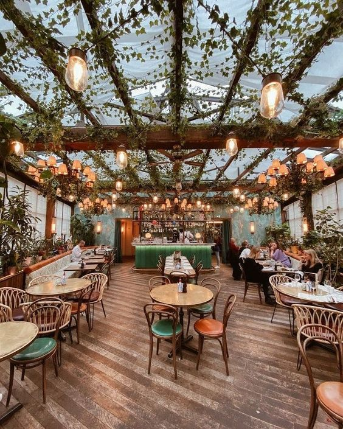
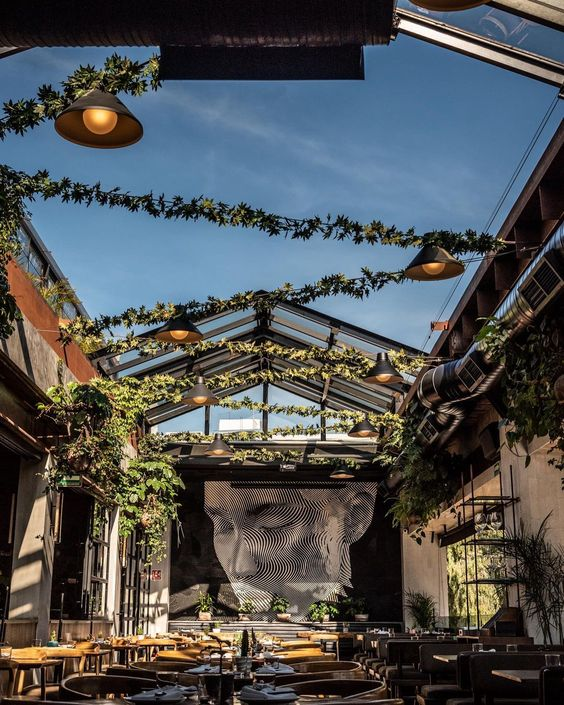
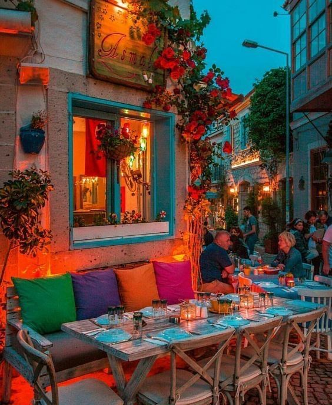

<div class="container-fluid">
  <div class="row">
    <div class="col-md-6 order-md-1">
      <div id="carouselExample2" class="carousel slide" data-ride="carousel" data-interval="2000">
        <div class="carousel-inner">
          <div class="carousel-item active text-center">
            
          </div>
          <div class="carousel-item text-center">
            
          </div>
          <div class="carousel-item text-center">
            
          </div>
        </div>
      </div>

      <div class="text-center mt-4">
        <h1>Italia: Un Viaje Culinario Auténtico</h1>
        <p class="mt-3">
          Italia, la cuna de la gastronomía y el arte culinario, 
          te invita a un viaje donde cada platillo es una obra maestra de sabores.
           Desde las románticas calles de Roma hasta las encantadoras trattorias de Toscana,
           la cocina italiana es un festín para los sentidos.
        </p>
        <div class="mt-3">
          <a routerLink="/reserva" class="btn btn-outline-secondary">Reservar</a>
        </div>
      </div>
    </div>

    <div class="col-md-6 order-md-2">
      <div class="col-md-6">
        <router-outlet></router-outlet>
      </div>
    </div>
  </div>
</div>
